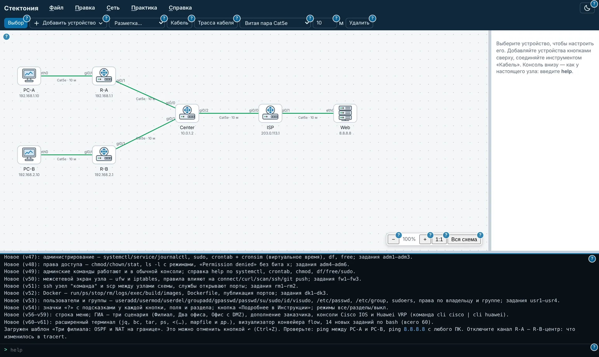
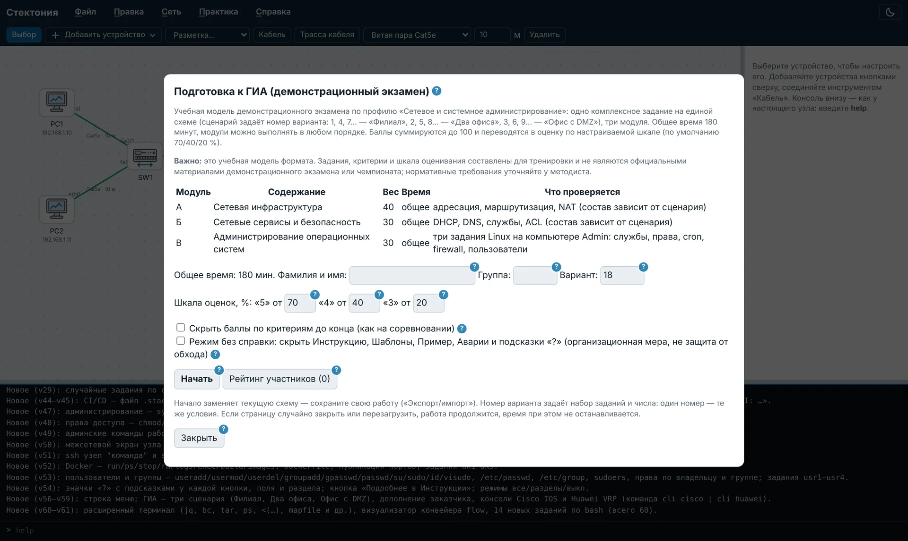

Научись строить сети.
Прямо в браузере.
«Стектония» — симулятор сетей и Linux для тех, кто учится на сетевого и системного администратора. Настраивайте маршрутизаторы Cisco, Huawei, Eltex, ломайте и чините сети, готовьтесь к ГИА, демонстрационному экзамену и реальной работе — без установки и без аккаунтов.

Настоящая сеть — дорого. Практика — бесплатно.
Чтобы стать инженером, нужно руками настроить сотни схем и сотни раз ошибиться. Но в колледже один стенд на десять студентов, дома — ноутбук, а зарубежные симуляторы то недоступны, то только на английском, то требуют образов, которых не достать. Мы сделали инструмент, который открывается за секунду на любом устройстве.
| Стектония | Cisco Packet Tracer | GNS3 / EVE-NG | s2 Nettest | |
|---|---|---|---|---|
| Работает в браузере, без установки | ✓ | ✗ | ✗ | ✗ |
| Бесплатно и без регистрации | ✓ | нужен аккаунт | нужны образы ОС | лицензия |
| Консоли Cisco, Huawei и российский Eltex | ✓ | только Cisco | нужны образы | частично |
| Linux-терминал, Docker, Git, Ansible внутри | ✓ | ✗ | нужны ВМ | ✗ |
| Модель Astra Linux (мандатный доступ) | ✓ | ✗ | ✗ | ✗ |
| Режимы ГИА, ДЭ и «Профессионалы» на русском | ✓ | ✗ | ✗ | частично |
| Открытый код, можно развернуть у себя | ✓ | ✗ | частично | ✗ |
| Работает на слабых ПК и планшетах | ✓ | зависит | ✗ тяжёлый | Windows |
В России альтернатив нет. По крайней мере, мы не знаем другого бесплатного, открытого, русскоязычного симулятора, который одновременно даёт консоли Cisco, Huawei и Eltex, Linux с Docker и Ansible, Astra Linux и режимы подготовки к ГИА и демоэкзамену — и открывается в браузере. Таблица составлена по открытым данным и может устаревать — если вы знаете достойную альтернативу, напишите нам, мы поправим.
Целая лаборатория в одной вкладке
Схемы и кабели
Перетаскивайте ПК, коммутаторы, маршрутизаторы, межсетевые экраны, точки Wi‑Fi, серверы, камеры, ИБП. Кабели с типом и длиной, трассы, статусы портов.
Консоли как у настоящих
Cisco IOS, Huawei VRP, Eltex ESR: режимы, подсказки, show-команды. Привычный синтаксис, который потом пригодится на реальном оборудовании.
Linux внутри
bash, vim, nano, python, пользователи и права, systemd, cron, ufw/iptables, Docker, Git, CI, Ansible. Скрипты проверяются автоматически.
Режим симуляции
Пройдите по шагам путь пакета: заголовки Ethernet и IP, ARP, TTL, что делает каждый узел на каждом уровне OSI. Теория наконец становится видимой.
Анализатор пакетов
Захват, фильтры в стиле Wireshark, дерево заголовков, hex-дамп и сохранение в .pcap — откройте файл в настоящем Wireshark.
Аварии и поиск неисправностей
Обрыв канала, дубликаты адресов, петли STP, неверные VLAN и маршруты. Найдите причину — как на реальной эксплуатации.
Маршрутизация и службы
OSPF, BGP, RIP, VRRP, BFD, PBR, NAT, ACL, VLAN, STP, IPv6, IPsec, 802.1X/RADIUS, DNS, DHCP, прокси, балансировщик, SIEM.
Для преподавателя
Задания с критериями, ведомость группы в CSV, варианты по номеру, строгий режим экзамена, режим проектора, запись и воспроизведение сеанса.
Всё у вас на устройстве
Нет серверной части и слежки: схемы хранятся в браузере. Можно работать офлайн или выложить у себя в классе — подойдёт любой статический хостинг.
Одна платформа — четыре дороги к профессии
Учись и не бойся ошибаться
09.02.06, 09.02.07, 10.02.05 и смежные. Лабораторные по темам курса, подсказки «?» у каждой кнопки, автоматическая проверка.
Репетиция экзамена
Три сценария демонстрационного экзамена на 180 минут, критерии, баллы, оценка по шкале и рейтинг. Тренируйтесь столько, сколько нужно.
Стенд в каждом браузере
Выдавайте задания, собирайте результаты, проводите контрольные без закупки оборудования и без установки на классные ПК.
Путь с нуля до джуна
От «что такое IP-адрес» до OSPF и Ansible. Пособие из 70 лабораторных ведёт шаг за шагом, а симулятор сразу всё проверяет.
Как стать крутым специалистом
Не просто «потыкать кнопки», а выстроить навык: от основ к сложным схемам, от схем к экзамену, от экзамена к реальной работе.
Основы: адресация и первая сеть
Два ПК, коммутатор, маршрутизатор. ip, ping, tracert, шлюзы, маски, VLSM. Учимся читать сеть глазами.
Коммутация и маршрутизация
VLAN, STP, статические маршруты, OSPF, BGP, VRRP. Ломаем канал — смотрим, как сеть выздоравливает сама.
Безопасность и службы
ACL, межсетевой экран и DMZ, VPN, 802.1X, DNS, DHCP, прокси, журналы и SIEM. Закрываем лишнее и находим атаку в логах.
Linux и автоматизация
Права, службы, cron, Docker, Git, CI, Ansible, Python. То, без чего сегодня не берут в администраторы.
Экзамен: ГИА, ДЭ, «Профессионалы»
Таймер, критерии, баллы, строгий режим. Привыкаем к давлению времени до того, как оно станет настоящим.
Реальная работа
Привычка диагностировать, документировать и проверять. Синтаксис консолей совпадает с рабочим — на оборудовании вы уже «дома».
Придите на экзамен уже уверенным
Страшен не экзамен, а неизвестность. Здесь вы заранее проживёте его формат — столько раз, сколько захотите.
- Три модуля на единой схеме: сетевая инфраструктура, сервисы и безопасность, администрирование Linux.
- Варианты по номеру: тот же номер — те же условия, можно честно сравнивать результаты.
- Критерии и баллы с оценкой по настраиваемой шкале, строгий режим без подсказок.
- Скрипты и Git проверяются автоматически — как на реальном задании.
- Ведомость группы для преподавателя: загрузите файлы результатов и получите таблицу и CSV.
Это учебная модель формата, составленная для тренировки. Официальные задания и нормативы уточняйте у методиста и в документах организатора.

Посмотрите, как это выглядит
Схема «Три филиала: OSPF и NAT» — перетаскивайте, соединяйте, настраивайте.
Открытый код. Навсегда открытый.
«Стектония» — свободное программное обеспечение под лицензией GNU AGPL‑3.0. Вы можете использовать, изучать, изменять и распространять её — в том числе в колледже и в коммерческих проектах. Единственное условие: если вы улучшаете «Стектонию» и даёте пользоваться ей другим (даже через сайт), вы публикуете свои улучшения на тех же условиях. Так проект остаётся общим.
$ python3 -m http.server 8080
→ http://localhost:8080
# хотите помочь?
# — найдите ошибку в консоли
# — добавьте шаблон или лабораторную
# — переведите, улучшите, расскажите
# коллегам и студентам
Проект делает один преподаватель. С вашей помощью — быстрее.
Стектония была и останется бесплатной. Но домен, хостинг, время на новые лабораторные и проверку каждой функции стоят ресурсов. Если проект помог вам или вашим студентам — поддержите его любой суммой. Это самая прямая благодарность.
Способы поддержки появятся здесь совсем скоро. А пока — напишите нам через форму ниже или поставьте звезду проекту.
Нет возможности донатить? Это тоже огромная помощь: поставьте звезду на GitHub, расскажите одногруппникам и коллегам, сообщите об ошибке или предложите идею.
Коротко о главном
Это правда бесплатно?
Да. Нет подписок, рекламы и скрытых платежей. Поддержка проекта — только добровольная.
Нужно ли что-то устанавливать или регистрироваться?
Нет. Откройте страницу симулятора в любом современном браузере — на ПК, ноутбуке или планшете. Работа сохраняется в вашем браузере.
Это точная копия оборудования Cisco, Huawei или Eltex?
Нет. Это учебная модель: она воспроизводит логику сети и привычный синтаксис команд, но не заменяет реальное оборудование и не содержит прошивок. Названия производителей принадлежат их владельцам и используются только для обозначения совместимого синтаксиса.
Можно ли использовать в колледже и на занятиях?
Да, именно для этого проект и создан. Можно открыть на сайте или развернуть у себя: достаточно любого веб-сервера. Лицензия AGPL разрешает это бесплатно.
Это официальная подготовка к ГИА и демоэкзамену?
Это учебная модель формата для тренировки. Официальные задания и критерии определяет организатор экзамена — сверяйтесь с его документами.
Куда уходят пожертвования?
На домен, хостинг, разработку и проверку новых лабораторных и сценариев. Проект остаётся открытым при любых обстоятельствах.
Как сообщить об ошибке или предложить идею?
Форма ниже — автор читает все сообщения и отвечает на почту. Если у вас есть аккаунт GitHub, можно также завести issue в репозитории.
Нашли ошибку? Есть идея?
Каждое сообщение читает автор проекта. Пожелания студентов и преподавателей напрямую определяют, что появится в следующей версии. Хотите предложить сотрудничество — тоже пишите, удобным для вас способом.